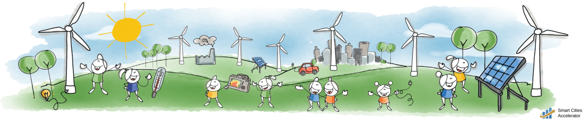

Energieksperiment
Detta material är en följd av övningar och är indelat i olika områden. Område väljs från översta nivån av flikar. Övning väljs från nästa nivå av flikar.
Inomhusklimat
Eleven i kammaren
Frågeställning
Hur tror du att temperaturen i ett rum påverkas av att det finns människor i rummet? Hur påverkas människokroppens temperatur av att det är hög temperatur i rummet?
Materiel
1 kammare på ungefär 1 kubikmeter: stor låda, bås, toalett eller städskrubb. Är volymen större tar experimentet mycket längre tid. Andra effekter påverkar då också, t.ex. värmeledning, luftombyte o.s.v. 1 digital termometer som mäter temperaturen i kammaren. T.ex. kan en digital termometer för inne- och utetemperatur användas. 1 termometer för kroppsbruk(kontakt), eller termometer som inte kräver kroppskontakt. Med IR-kamera mäts temperaturen vid ögonkanten mot näsan. (medial canthus)
Vid användning av låda. Ställ lådan på golvet på ett sådant sätt att lådan har väggar och tak. Skär ut längs två kanter på en kortsida så att den uppkomna luckan kan fällas upp och man kan krypa in i lådan, och fälla ner luckan och stänga.
Experiment
I stället för att direkt mäta i ett klassrum med elever mäter vi i ett litet rum, en kammare, och med endast en människa. Försök sedan dra slutsatser om vad som händer i ett helt klassrum med elever.
• Avläs temperaturen i kammaren. Mät personens temperatur.
• Låt en person sätta sig inne i kammaren. Studera temperaturökningen i kammaren; sitt inte så länge att luften känns obehaglig. Anteckna temperaturökning och tid som personen varit i kammaren. Mät personens temperatur.
• Vädra ut kammaren så temperaturen sjunker tillbaka till rumstemperaturen. Väggarna måste också få lite tid på sig.
• Upprepa laborationen igen, men låt personen, samma som tidigare, hoppa hopprep, göra armhävningar eller springa upp och ner i en trappa innan personen placerar sig i kammaren igen. Mät som tidigare.Uppföljning
• Vilken temperatur (cirka) har din kropp? Vid vila och vid ansträngning (t.ex. hopprep)? (IR-kameran kanske inte ger korrekt temperatur men den mäter ändringar korrekt.)
• Varifrån kommer energin som ökar temperaturen i luften i lådan? Vad hade hänt med temperaturen om du placerat ett värmeljus i lådan i stället för din kropp? Vad förbränner lågan, vad förbränner din kropp?Kan kräva kunskaper om förbränning.
• Vad händer med temperaturen i ett rum med volymen 200 kubikmeter fyllt med 30 människor (ett vanligt klassrum)?Kan lösas på flera sätt: rent algebraiskt, grafiskt, aritmetiskt med tabell. Antagande om proportionalitet.
• Hur kan din kropp hålla sin temperatur konstant fastän temperaturen hos luften i klimatkammaren inte är konstant?Denna fråga kan kräva förkunskaper om ledning, strålning, avdunstning, konvektion, svettning med mera om den ska besvaras lite djupare.
Se till att ventilationen kan stängas av eller blockeras tillfälligt om bås, toalett eller liknande används. Beräkningar som kopplar temperaturändringar i luften till värmekapacitivitet för luft och kroppens effekt ger inte korrekt resultat för kroppens energiomsättning.
Med kroppens temperatur avses en inre temperatur, inte yttemperatur.
Avsikten med experimentet är att fokusera på kroppens förbränning. Följs senare upp av koldioxidproduktion. Annat experiment som gör liknande kan ersätta detta experiment.
Eleven i kammaren CO2
Frågeställningar
Hur tror du att koldioxidhalten i ett rum påverkas av att det finns: • människor i rummet? • brinnande stearinljus i rummet?
Materiel
Ett klassrum med människor. Utrustning för mätning av koldioxidhalt. En IC-meter fungerar bra.
BILD Klassrum, stearinljus, växter?
Experiment
Experimentet består av några delexperiment som ska jämföras.
Experiment 1: Referensexperiment
• Kontrollera att utrustningen fungerar.
• Mät under några dagar, alternativt en typisk dag med elever i klassrummet.
• Diskutera hur en typisk dag ser ut och varför. Diskutera eventuella variationer eller avvikelser. Vilket värde har ni på andelen koldioxid då rummet är utvädrat? (ppm)Experiment 2: Kan vi höja koldioxidhalten?
• Stäng av ventilationen och täta eventuella större hål i rummet: tröskel, ventilationsgaller o.s.v.
• Alla utför någon fysisk ansträngning: armhävningar, hoppa...Experiment 3: Förbränning
• Låt en del av lektionen pågå och observera om mätningarna ser normala ut.
• När en del av lektionen pågått så tänd stearinljus eller fotogenlyktor. Observerar ändringen i koldioxidhalt.Experimenten kan varieras mycket. Fundera om det finns något mer ni kan experimentera med i just er situation på er skola?
Man kan göra mindre experiment i mindre rum, exempelvis grupprum.
Olika grupper kan göra olika experiment och sedan redovisa och diskutera.
Uppföljning
• Varifrån (vilka processer) kommer koldioxiden i klassrummet då endast människor är i rummet? ppm koldioxid per minut?
• Varifrån (vilka processer) kommer koldioxiden i klassrummet då endast ett brinnande ljus är i rummet? ppm koldioxid per minut?
• Vad producerar mest koldioxid per minut, du eller det brinnande ljus ni använde?Information
Normal koldioxidhalt, över marina ytor, var februari 2019 enligt NOAA och Global Greenhouse Gas Reference Network 411 ppm. Ett år tidigare var den 408 ppm. (NOAA: National Oceanic and Atmospheric Administration, USA) Förindustriellt värde är något under 300 ppm, uppgifter varierar mellan 260 och 290 ppm. Över längre tid så fluktuerar värdena mellan 200 och 300 ppm över någotsånär cykliska perioder på 100 000 år de senaste 800 000 åren.
Koldioxidhalten anges som parts per million (miljondelar) ppm. Andelen beräknas som antalet koldioxidmolekyler dividerat med totala antalet molekyler (även koldioxid) i luften, dock ej vattenmolekyler (torr luft). 0,000400 = 400 ppm.
Kopierat och inspirerat av http://www.carboeurope.org/education/indoorhands.php
Energiförluster
Luften flyttar energi
Frågeställningar
Hur flyttas energi med hjälp av luft?
Material
Ca 15-20 värmeljus placerade i ring.
Fransat silkespapper eller liknande för att detektera luftström.

Experiment
Placera värmeljusen i en ring och tänd dem.
Observera förändringen hos värmeljusen. Ha gärna ett enstaka värmeljus en bit sidan om för att kunna jämföra och se förändringen.
Placera t.ex. fransat silkespapper i mitten av ringen en bit ovanför ljusen och observera vad som händer. Se upp det är varmt!
Uppföljning.
Hur tolkar du förändringen hos värmeljusen?
Vad händer med det fransade silkespapperet? Hur tolkar du det?
Resultatet bör se ut som på bilden nedan.

Lågorna är riktade in mot mitten av cirkeln. Detta orsakas av att luften strömmar på grund av upphettningen. Silkespapperet kommer att fladdra pga luftströmmen.
Energin leds bort
Frågeställningar
Hur bra är olika material på att leda värme.
Materiel
En skål. Hett vatten. En träsked, en metallsked och en plastsked. Kanske något av glas eller valfritt.
En IR-kamera.
Föremålen som man ska mäta på med IR-kameran ska ha en tejpbit som är svart på det område där mätningen ska ske. Detta på grund av att emissiviteten kan variera kraftigt, speciellt kan metaller ha ett annat värde än t.ex. trä.
Experiment
Placera skedarna i en skål, låt dem luta mot kanten.
Mät temperaturen hos skedarna med hjälp av IR-kameran.
Koka vatten i en vattenkokare.
Häll vattnet i skålen med skedar.
Låt stå en minut eller två.
Titta på eller ta foto av uppställningen så temperaturen på de olika föremålen kan bestämmas. Det räcker med att avgöra ordningen mellan dem avseende temperatur, noggrann mätning behövs ej. Du kan också känna på föremålen.
Uppföljning
Vilken ordning har de testade materialen i fråga om värmeledning?
Vilket material ska man använda för att få så låg värmeledning som möjligt?
Är glas en bättre eller sämre värmeledare än trä? Vad innebär detta för ett fönster i ett hus? En del hus har metall runt fönstret, vad innebär det för värmeledningen?
Se i listan över värmeledningsförmåga för några material. Stämmer de med din mätning?Ibland betecknas värmeledningsförmågan med (lambda).
Se figur för typiska exempel på temperaturer och variationer. Silversked 41,8 ºC, träkniv 30,2 ºC, metallsked 36,8 ºC och plastsked 26,0 ºC.
I denna figur syns problematiken med emissiviteten. För silverkniven, längst till vänster, verkar det som att temperaturen är lägre längre ner mot det heta vattnet och högre temperatur överst på den svarta tejpen. För träkniven, nummer två i raden, har däremot en högre temperatur närmare det heta vattnet.
Observera också att kameran ändrar skalan.
Bilden nedan visar de fyra föremålen på en bänk. Områden med ’hög temperatur’ på silver och metallskeden är reflektioner från taklampor, inte en högre temperatur.
Energikällor
Solceller
Frågeställning
Vilka faktorer styr effekten som kan erhållas från en solcell?
Material
En solcell större än 1 kvadratdecimeter.
Ställning som kan hålla solcellen fast i olika vinklar. Enklast om solcellen kan roteras kring en axel.
Voltmeter, amperemeter eller wattmeter.
Tjockt svart papper. Helt ogenomskinligt.
En liten tavla att redogöra för resultat på.
Alega har solceller som ger 2 V och 0,5 A. 11,5x8,2 cm. 87,50 kr. De har också plastspeglar 10x8 cm för 30 kr.
Experiment
Rikta en solcell mot solen, använd gärna ett stativ eller hållare.
Mät spänning och ström från solcellen, eller effekt. Ändra solcellens vinkel i förhållande till solen; vad blir det för effekt beroende på vinkel? Konstruera en graf som illustration. Resultatet betyder mycket för hur solceller kan användas.
Använd ett tjockt svart papper för att täcka solcellen i olika omfattning. Börja med att täcka en liten andel (ange i procent) och täck mer och mer. Hur beror effekten på hur stor andel som är täckt? Rita en graf för att illustrera. Resultatet betyder mycket för hur solceller ska skötas.
Även om solcellen är direkt riktad mot solen så blir effekten från solen mindre ju lägre solen står: Varför är det så? Jordens atmosfär är överdriven i bilden.
Uppföljning
Vilka faktorer är viktiga vid användning av solceller för att få största möjliga effekt? Mängden ljus, vinkeln mot solen, mängden absorption i atmosfären. Att solcellens yta är ren. Jämn belysning.
Varför ska en solcell helst se svart ut? Att den ser svart ut innebär att den absorberat allt ljus(i det synliga området).
Hur kan man få ännu mer solljus på solcellen utan att göra själva solcellen större? Genom att reflektera solljus från omgivningen. Dock finns det ett maximum så effektivast är det vid låg belysning. Även om man reflekterar ljus till solcellen så är det viktigt att den blir jämnt belyst, svagaste flödet bestämmer strömmen.
Angående första experimentet med solcell. Var på Jorden är det bäst? Hur högt stiger solen som högst under vintern i Sverige? Vilken årstid är det i Sverige på bilden? Rita läget för Jorden ett halvår senare. Vad innebär norra och södra vändkretsarna för solceller; de ligger cirka 23,5 grader norr respektive söder om ekvatorn?
I Sverige är det sommar, på södra halvklotet vinter. Solen stiger vid Malmös Latitud ca 10 grader över horisonten. Se även dette link.
